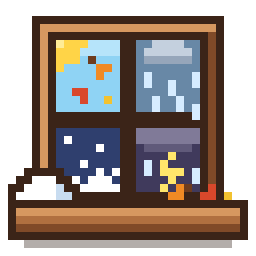

Parapet
Falling leaves, rain and snow on your desktop. They land on your windows and follow the real weather outside.
What it does
28 kinds of leaves
Maples, oaks, ginkgo, chestnut… each one tumbles, swings or spirals down in its own way.
Windows are roofs
Leaves and snow settle on top of your windows and ride along when you move them. Shake a window to knock them off.
Your mouse is the wind
Sweep leaves around, blow snow off the drifts and splash through puddles.
Real weather
Rain, snow or storms when it's happening outside your window. No account or setup needed.
Rare visitors
A hedgehog, a fox in the snow, a frog between puddles, a robin on your windows and more.
Light and quiet
Clicks pass right through it. Pauses during games and videos and saves battery on laptops.
Getting started
Windows
- Open the downloaded Parapet.exe.
- If a blue “Windows protected your PC” box appears, click More info, then Run anyway.
- Leaves start falling. Settings are in the tray icon near the clock.
Windows shows that warning for new apps without a paid signing certificate. Parapet is open source, so anyone can check what it does.
Mac
- Open the downloaded zip and drag Parapet into Applications.
- The first time, right-click Parapet and choose Open.
- On macOS 15 or newer: open System Settings → Privacy & Security, scroll down and click Open Anyway.
- Parapet lives in the menu bar at the top of the screen.
Questions
Is it free?
Yes, completely. No ads, no account, no tracking.
Is it safe?
Parapet is open source under the GPL v3 license: its full code is public and the downloads are built automatically from it. The only thing it fetches from the internet is the weather forecast.
Will it slow my computer down?
No. It uses a few percent of one CPU core and pauses on its own during full-screen games and videos, on the lock screen and when the screen is off.
How do I close or remove it?
Right-click the tray icon (Windows) or click the menu bar icon (Mac) and choose Exit. To remove it, just delete the file. Nothing else is installed.
Does it work on Linux or Intel Macs?
Not yet. Parapet currently runs on Windows 10/11 and on Macs with Apple silicon.